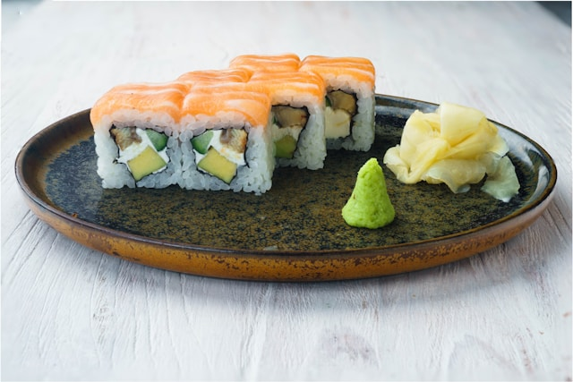

Рецепт ролл Калифорния

Роллы Калифорния
Американский вариант роллов
Привнесёт разнообразия в ваш рецепт
Ингридиенты
- Круглозёрный рис
- Мясо краба
- Соевый соус
- Маринованный имбирь
- Вассаби
- Водоросли нори
- Рисовый уксус
- Авокадо
- Свежий огурец
- Икра Тобико
- Японский майонез
Шаги
- Промыть рис до чистой воды
- Влить уксус в рис и перемешать деревянной лопаткой
- Огурец и авокадо очистить и нарезать полосками
-
Половинку листа нори выложить на циновку глянцевой стороной вниз, выложить рис и распределить, сложить циновку и перевернуть ее с содержимым так, чтобы рис оказался снизу
-
На листе нори сделать дорожку в центре из васаби и майонеза, выложить мясо краба, огурец и авокадо, свернуть ролл
- Ролл обвалять в тобико, разрезать острым ножом на 6 одинаковых частей